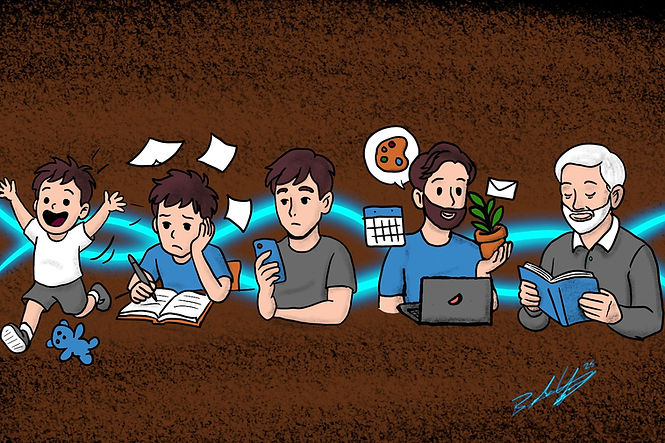

Cuando dijeron: “Los adultos lo superan”
Cuando me diagnosticaron TDAH por primera vez, recuerdo que alguien dijo: "No se puede tener TDAH, los niños suelen superarlo con la edad". Por un tiempo, lo creí. Pensé que tal vez no tenía TDAH. Tal vez solo necesitaba esforzarme más.
Pero esto es lo que aprendí: no superamos el TDAH con la edad . Nos adentramos en él . El TDAH se extiende a lo largo de toda nuestra vida. Simplemente aprendemos a enmascararlo, a sobrecompensarlo, a manejar las responsabilidades con una mano mientras con la otra escondemos el caos. Y eso se vuelve agotador.
El TDAH no desaparece con la edad. Cambia de forma. El niño hiperactivo se convierte en el estudiante distraído, luego en el adulto con exceso de trabajo, y finalmente en el alma cansada que se pregunta constantemente por qué todo le resulta más difícil de lo que debería. ¿La buena noticia? Cada etapa trae consigo sus propias oportunidades de comprensión, sanación y crecimiento. No podemos superar el TDAH con la edad, pero sí podemos superar la vergüenza que tan a menudo lo acompaña.
Primera infancia: pequeños tornados y momentos tiernos
Los años preescolares pueden sentirse como vivir en un torbellino. Pueden correr, trepar y rebotar sin parar, como si tuvieran un motor invisible. Esperar en la fila, sentarse a la hora del cuento o cambiar de actividad puede provocar crisis. Las tormentas emocionales son comunes; una pequeña frustración (como el color equivocado de la taza) puede resultarles enorme. A esta edad, no se trata de "desafío". Simplemente, sus cerebros aún no están preparados para gestionar los impulsos ni regular esos sentimientos fuertes. Aunque suele ser demasiado pronto para obtener un diagnóstico, ya que muchas partes del cerebro aún no están lo suficientemente desarrolladas como para distinguir el TDAH del comportamiento normal de un niño pequeño, si hay antecedentes de TDAH en la familia, podrías notar algunas señales de lo que está por venir.
Aunque todavía no hayan sido diagnosticados, existen estrategias que pueden ayudar a que las cosas sean un poco más fáciles.
Lo que más ayuda en esta etapa es una estructura que se sienta segura y predecible. Horarios visuales, canciones para las transiciones e instrucciones paso a paso ayudan a los pequeños a comprender su día. Al elogiar el esfuerzo en lugar del resultado , diciendo cosas como "¡Intentaste ponerte los zapatos tú solo!", estás programando su cerebro para la resiliencia, no para la perfección.
¿Y el movimiento? No es mala conducta; es medicina. El juego regular, los descansos sensoriales y las oportunidades para moverse ayudan a regular la energía y las emociones. Cuanto más respetamos sus necesidades en lugar de combatirlas, más tranquilos nos sentimos todos.
Si desea obtener más información sobre cómo apoyar el desarrollo temprano del TDAH, consulte Zero to Three o el Child Mind Institute . Ambos ofrecen excelentes recursos para padres que transitan esos primeros años de vida llenos de energía.
Edad escolar: Las guerras de las tareas y las batallas ocultas
Cuando los niños comienzan la escuela, el TDAH empieza a chocar con las expectativas. Quedarse quieto, recordar las tareas, seguir instrucciones, todo lo que pide la clase, puede sentirse como escalar una montaña descalzo. El niño brillante, curioso y creativo también podría ser el que pierde su mochila dos veces por semana o el que suelta respuestas antes que nadie. Por lo general, entre los 5 y los 7 años , un especialista debería poder diagnosticar el TDAH. Esto ofrece la oportunidad de ayudar a su hijo a tener éxito trabajando para conseguir adaptaciones en la escuela a través de un IEP o un plan 504 .
La organización se convierte tanto en un desafío como en una oportunidad. Dividir las tareas en partes pequeñas, usar carpetas con códigos de colores o crear un espacio de trabajo tranquilo puede ayudar a convertir el caos en algo más manejable. Y a veces, lo que parece pereza es en realidad agotamiento por esforzarse tanto por mantener el ritmo.
Los maestros desempeñan un papel fundamental en este aspecto . Cuando permiten descansos para moverse, tiempo adicional o asientos alternativos, los niños no solo se desempeñan mejor, sino que se sienten valorados. Como padres, abogar por adaptaciones 504 o PEI puede crear la red de seguridad que su hijo necesita para prosperar.
Y si puedes, crea momentos de conexión en lugar de corrección. Al sentarte a su lado mientras trabajan (una especie de doble cuerpo), les estás aportando calma para que se concentren. Les recuerda que no están solos en la lucha. Usa cronómetros visuales como el Time Timer para ayudar a tus hijos a gestionar el tiempo.
Para obtener una guía más profunda, CHADD y Understood.org son dos de los mejores lugares para explorar herramientas prácticas y consejos de defensa para las familias.
La adolescencia: la montaña rusa emocional
Los adolescentes con TDAH a menudo se sienten como si estuvieran conduciendo un coche de carreras con los cristales empañados. Quieren independencia, pero la gestión del tiempo, la organización y el control de los impulsos aún no han alcanzado su máximo potencial. El incumplimiento de tareas, la procrastinación, las decisiones arriesgadas y las noches largas son comunes, no porque no les importe, sino porque sus cerebros están programados para la intensidad.
En esta etapa, la orientación y la colaboración son más importantes que el control. Ayuda a tu hijo adolescente a experimentar con sistemas que le funcionen, como la planificación de tiempo, el uso de agendas digitales como Todoist o Google Calendar , o la programación de reuniones semanales con uno de sus padres, un amigo o un entrenador.
Las conversaciones sobre riesgos también son clave. Hablar con antelación sobre la conducción, las sustancias o las relaciones les da herramientas para tomar decisiones más seguras cuando las emociones se intensifican. Y, por favor, ayúdenlos a cuidar su sueño. Una hora de acostarse constante, un menor uso de pantallas por la noche e incluso una simple rutina para relajarse pueden marcar una gran diferencia en la concentración y el estado de ánimo.
Estos años son cuando la autoestima suele sufrir los mayores golpes. Recuérdeles que el TDAH no es un defecto; es un sistema operativo diferente. Con apoyo, pueden aprovecharlo para lograr cosas increíbles. Recursos como el Kit de Herramientas para Adolescentes de ADDitude y la Fundación Jed ofrecen estrategias que abordan tanto los aspectos emocionales como los prácticos del TDAH.
La adultez: la carga invisible
Los adultos con TDAH suelen describir la sensación de estar en una carrera sin fin. Las señales se manifiestan en plazos incumplidos, facturas olvidadas, agotamiento emocional y una sensación de estar constantemente "atrasados". Muchos hemos aprendido a disimular tan bien que la gente asume que estamos bien, cuando en realidad, lo mantenemos todo bajo control con cinta adhesiva mental.
Aquí es donde ayuda liberarse de la carga y enfocarse en el mundo que te rodea. Externaliza tu memoria. Anota, usa tableros visuales o programa recordatorios en tu teléfono para todo. Herramientas como Trello , Notion e incluso las notas adhesivas pueden convertirse en tu segundo cerebro.
La automatización es otro salvavidas. Deja que la tecnología se encargue de lo que tu cerebro no necesita retener usando herramientas como el pago de facturas , las suscripciones al supermercado y las alertas del calendario . Y no tengas miedo de pedir lo que necesites en el trabajo. Muchos lugares de trabajo ofrecen estructuras flexibles o adaptaciones cuando te defiendes a ti mismo .
Esta es también la etapa en la que desaprender la vergüenza se vuelve esencial. El coaching o la terapia pueden ayudarte a identificar las viejas historias que te hacen sentir "perezoso" o "roto" y reemplazarlas con la verdad. No estás roto. Estás hecho para un mundo diferente.
Si desea profundizar en el apoyo para adultos con TDAH, How to ADHD en YouTube y ADHD Coaches Organization son excelentes puntos de partida.
Vida posterior: redescubrirse a uno mismo
El TDAH no desaparece. En la vejez, puede manifestarse como olvidos, distracción o dificultad para mantener las rutinas. A veces se confunde con el envejecimiento normal, pero para muchos adultos mayores, es el mismo patrón familiar, aunque un poco más discreto.
La belleza de esta etapa reside en la perspectiva. Sabes qué te ha funcionado antes. Aprovecha esas herramientas. Simplifica tus rutinas, establece recordatorios visibles en casa y usa la tecnología para mantenerte al día. Los asistentes de voz, las notas adhesivas y los pastilleros etiquetados no son signos de debilidad, sino de sabiduría.
Y no subestimes el poder de la conexión. Unirse a grupos de apoyo o comunidades en línea mantiene tu mente activa y tu corazón con los pies en la tierra. La ADDA ofrece recursos para adultos mayores que buscan mantenerse conectados y recibir apoyo.
TDAH a lo largo de la vida: los hilos comunes
Sin importar la edad, el TDAH es una relación que dura toda la vida con tu cerebro. Las estrategias que funcionaron en un momento dado podrían dejar de funcionar más adelante, y eso está bien. Crecer significa actualizar tus herramientas a medida que la vida cambia.
Sé amable contigo mismo. El TDAH no se trata de esfuerzo ni de carácter; se trata de una conexión. Algunos días fluirán de maravilla, y otros serán un desastre. Ambas cosas son normales. Lo importante es que sigas presente, aprendiendo y conectando.
El TDAH se desarrolla en aislamiento, pero la sanación se produce en comunidad. Ya seas un padre o una madre que cría a un niño difícil, un maestro o una maestra que apoya a un soñador o un adulto que intenta reconstruirse tras el agotamiento, no tienes que hacerlo solo/a.
El TDAH evoluciona, y nosotros también. No necesitas superarlo con la edad, solo necesitas aprender a comprenderte mejor. Porque la verdadera historia no se trata de ocultar tu TDAH. Se trata de aprender a vivir en sintonía con él y, finalmente, dejar que tu yo interior respire plenamente.
Si este artículo te parece interesante, no dudes en dejar un comentario a continuación. Si quieres saber más, escríbeme a braden@empoweradhdsolutions.com. o ven a discutirlo con nosotros en nuestro Discordia ¡Comunidad! Contamos con una comunidad diversa y entusiasta que participa en conversaciones sobre el TDAH, la neurodiversidad, temas tecnológicos y más. Además, ofrecemos numerosos enlaces a recursos para lecturas adicionales y desarrollo personal.
Y por último, si quieres apoyar mi trabajo, considera suscribirte. Tu apoyo me permite continuar mi labor, contribuyendo a un mundo mejor para las mentes neurodivergentes.